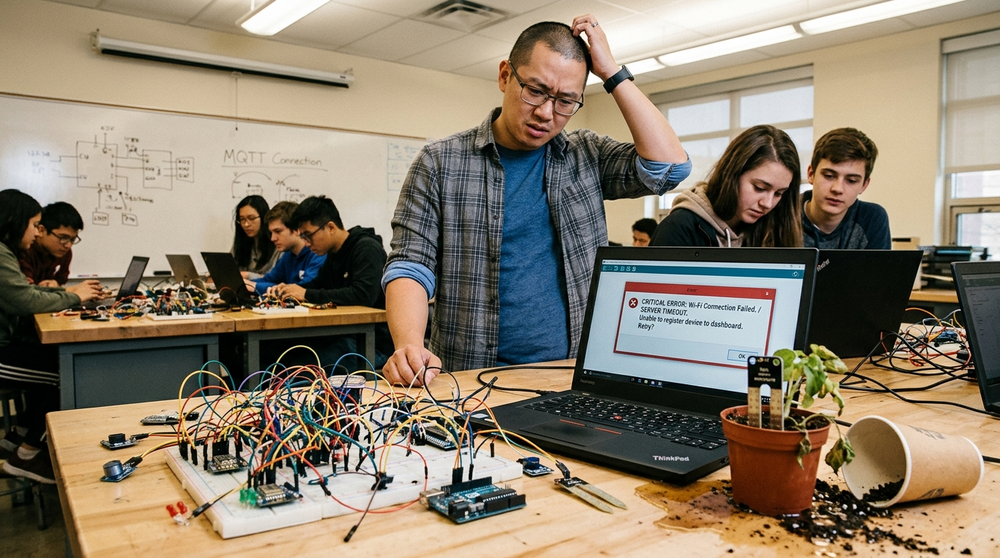
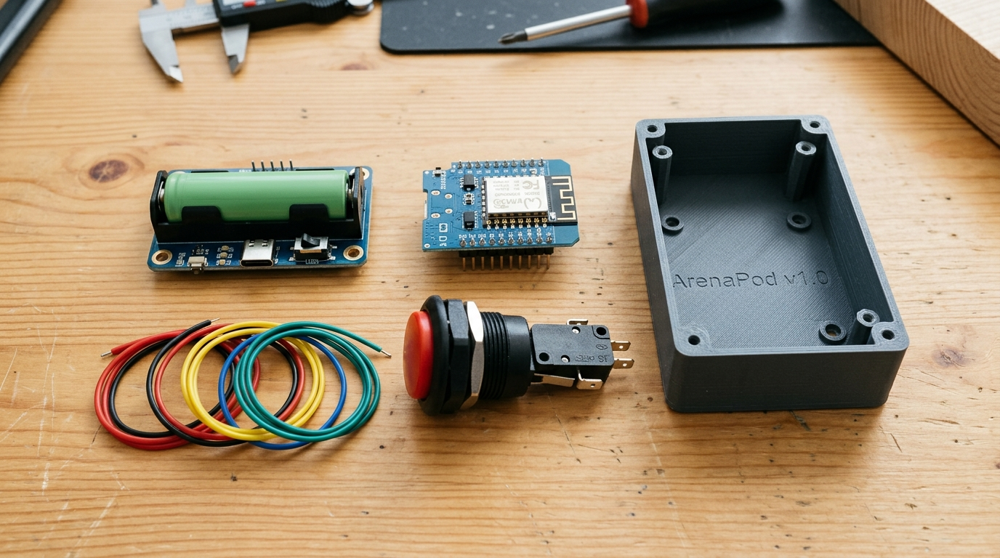
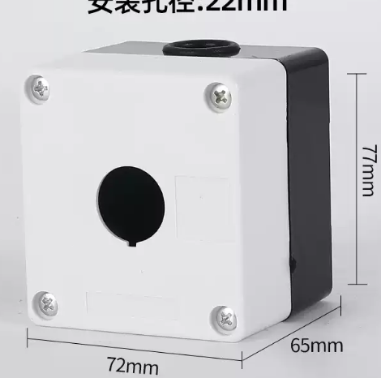
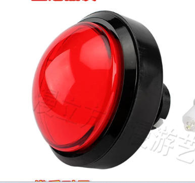
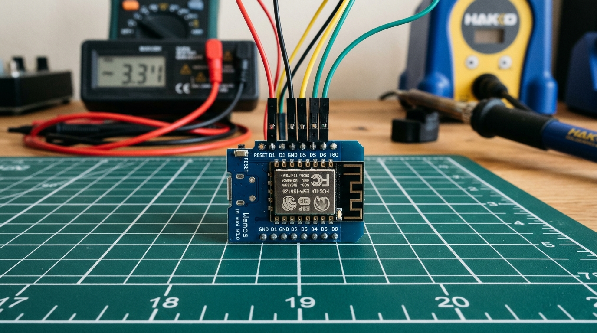
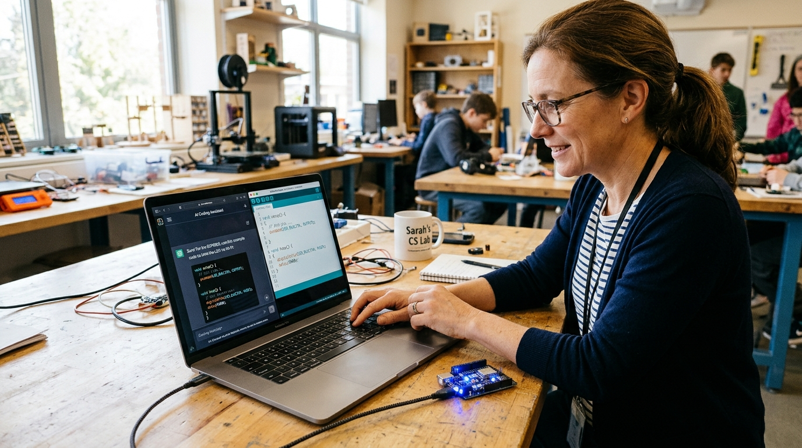
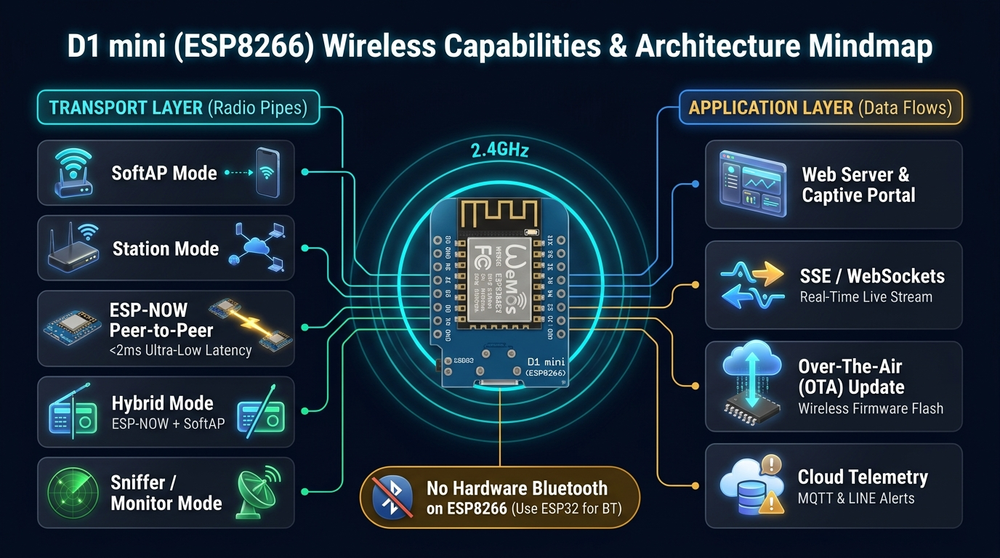
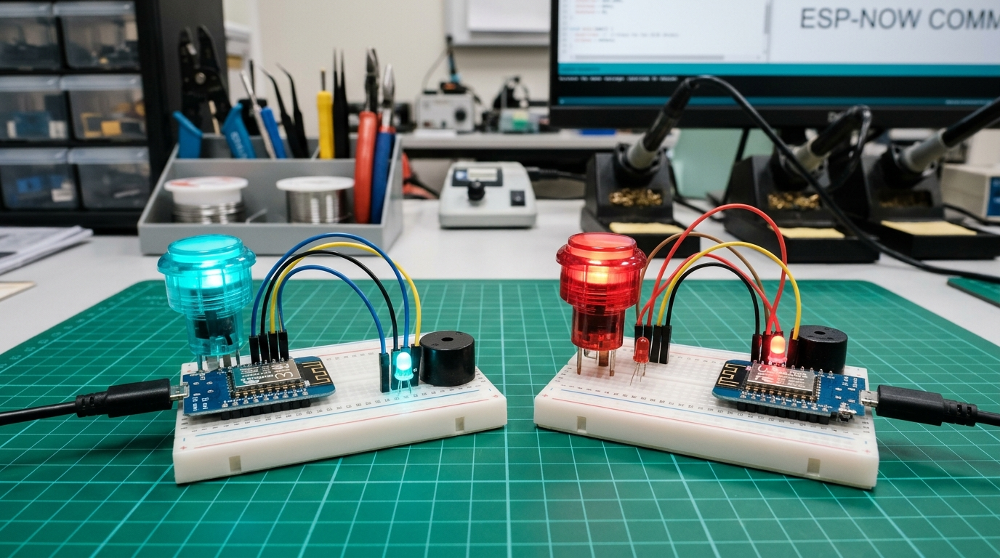
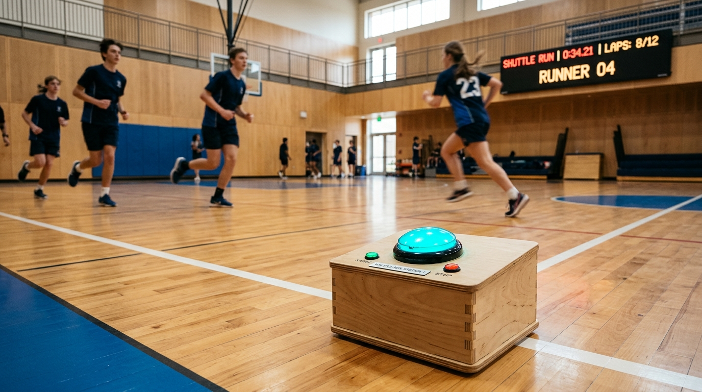
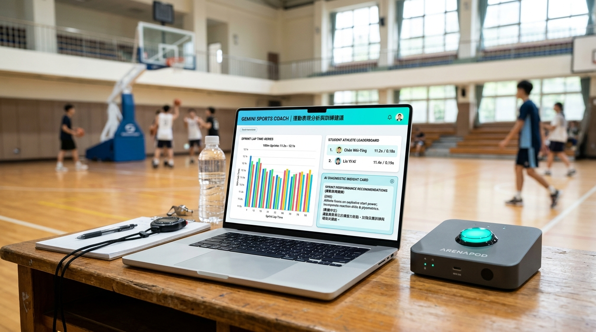

AIoT 機電整合課程概念
融合「開發端 AI 賦能」、「硬體端邊緣感測」與「應用端跨科整合」的實務思維
在國中科技領域的教學脈絡中，生活科技著重於機構加工、結構強度與工具操作；資訊科技則聚焦於運算思維、程式邏輯與演算法。兩者的交會點，正是當代工程教育不可或缺的「機電整合（Mechatronics）」。
1. 為什麼談機電整合？科技課堂的實務觀察
過去幾年，許多老師帶領孩子嘗試了非常多元的物聯網專題。這些主題在科學教育與生活應用上都極具啟發性，不過在每週有限的課堂排程中，現場也常會面臨一些客觀上的折衷與考量：


2. AIoT 機電整合的三大核心支柱
我們在規劃本研習時，希望為科技教師梳理一套兼具「可落地性」與「教學深度」的架構，將 AIoT 拆解為三大維度：
生科老師不必死背繁複的 C++ 語法，而是專注於「定義硬體腳位、設計狀態機邏輯與安全防護」，透過對話式提示詞（Prompt）引導 AI 生成完整且穩健的韌體與前端網頁。
面對操場或戶外沒有基地台的環境，採用耐拍微動開關與 ESP-NOW 低延遲無線協定（< 2ms），在邊緣端完成毫秒級時序採集與聲光反饋，擺脫外部 Wi-Fi 依賴。
將硬體按鈕採集的數據結構化，與體育課常見的折返跑、敏捷訓練相結合。學生製作的機電盒子不再只是期末作業，而是能真正走出教室、走上操場服務全校師生的實體工具。
3. 本課程的學習鷹架：循序漸進的實踐路徑
為了讓老師與學生都能輕鬆上手，課程設計依序分為四個清晰階段：
- 單板手速挑戰（單機自檢）：驗證微動按鈕、LED、蜂鳴器與 SoftAP/SSE 網頁推播，建立非阻塞程式概念。
- 雙板改桌號分組（P2P 廣播）：理解 ESP-NOW 點對點連線與軟體封包過濾邏輯。
- 拍擊動態配對（Tap-to-Pair）：運用狀態機實現一鍵握手自動配對，體會消費級產品的互動細節。
- 折返跑計時大腦（多節點串接）：延伸為中央裁判主機與多個端點的競技計時系統。

外殼機構加工與電源接線要點
生活科技手工具加工、14500 鋰電池配置與 5V 降壓保護要點
1. 外殼與開孔加工
為了承受學生日常按壓與反應拍擊，我們選用標準「工業級按鈕盒」，具備厚實耐用的特點：


- 生科擴孔實作：原盒為 22mm，使用生科教室之階梯鑽 (塔鑽) 或鉸刀，以平穩轉速擴孔至 24.5mm ~ 25mm。
- 側邊開關孔：側身鑽 12mm 圓孔，安裝金屬自鎖開關，方便隨時關閉電源。
- 內置固定架：使用雷射切割 3mm 木板或壓克力，製作「14500 單節電池座 + TP4056 充電模組」托盤。

2. 電源接線小提醒：14500 鋰電池請接 5V 腳位
14500 單節鋰電池滿電電壓約為 4.2V（標稱 3.7V）。
- 建議接法：正極請接入 Wemos D1 mini 的
5V(VIN) 腳位。板載的降壓晶片能平穩將 4.2V 降壓至穩定的 3.3V 供應主核心。 - 避免接法：請避免將鋰電池直接焊接到
3.3V腳位，因為 4.2V 超過 ESP8266 額定耐壓（上限約 3.6V），可能導致晶片過熱受損。
3. 分側集中安全接線表 (三線共地技巧)
按鈕與蜂鳴器集中在板子同一側，並利用 GPIO 輸出 0V (LOW) 作為虛擬接地 (Virtual Ground)，接線更單純：
| 腳位名稱 | GPIO | 連接元件名稱 | 功能說明與軟體配置 |
|---|---|---|---|
| D3 | GPIO0 | 大按鈕微動開關 (NO) | INPUT_PULLUP，按下接地導通 |
| D4 | GPIO2 | 按鈕與 LED 共用負極 (GND) | 軟體虛擬接地（常態輸出 LOW 0V） |
| D5 | GPIO14 | 按鈕內建 LED 正極 (+) | 數位輸出，HIGH 點亮 |
| D6 | GPIO12 | 無源蜂鳴器正極 (+) | PWM 頻率驅動 (tone() 發聲) |
| D7 | GPIO13 | 蜂鳴器負極 (GND) | 虛擬接地，靜音時切為 INPUT 高阻抗防底噪 |
| 5V | VIN | 14500 電池正極 (+) | 經開關輸入 3.7V~4.2V（經由 LDO 降壓保護） |
| GND | GND | 14500 電池負極 (-) | 電源地線回路 |
開發工作流進化：從「複製貼上」到「IDE 內閉環燒錄」
告別 Gemini 網頁與 Arduino IDE 來回切換，解鎖 Antigravity IDE + Arduino CLI 一站式 Vibe Coding


1. 兩種工作流的體驗對比（跨時代的轉變）
過去一年，多數老師接觸 AI 寫硬體程式，多半停留在「網頁問答」模式。這次研習我們將帶大家體驗現代軟體工程的「閉環代理人（Agentic IDE）」模式：
| 比較面向 | 過渡期模式：Gemini 網頁 ＋ Arduino IDE | 現代閉環模式：Antigravity IDE ＋ Arduino CLI |
|---|---|---|
| 操作視窗 | 在瀏覽器與 Arduino IDE 之間頻繁 Alt + Tab 切換。 |
單一視窗一站到底：對話、程式碼編輯、終端機燒錄全在同一個畫面。 |
| 代碼轉移 | 手動全選、複製、貼上；遇到多檔案（如 webpage.h）需手動開新頁籤，極易漏貼出錯。 |
AI 自動原地建檔：AI 根據架構自動建立資料夾、生成 .ino 與 webpage.h，完全不需手動搬磚。
|
| 編譯與燒錄 | 老師手動點選 Arduino IDE 頂部打勾與上傳按鈕。 | 指令背景代勞：後台透過 arduino-cli 直接自動編譯並上傳至指定 COM 埠。 |
| 除錯迴圈 (Debug) | 抄寫下方紅色報錯 Log ➔ 切回網頁貼給 Gemini ➔ 再複製修正版 ➔ 再貼回... | 自動自省修復：AI 自行讀取 CLI 編譯錯誤訊息，自動修正該行代碼並再次嘗試燒錄，老師甚至不用動手。 |
| 心流體驗 | 人是「搬磚工」：思考一直被複製貼上與切換視窗打斷。 | 人是「架構師」：專注於邏輯引導，享受真正的 Vibe Coding 沉浸感。 |
2. Antigravity IDE 快速安裝與起步（3 分鐘就緒）
Antigravity 是 Google DeepMind 團隊打造的現代代理人整合開發環境（Agentic IDE），專為人機協作編程設計：
- 從研習隨身碟或官方連結執行安裝檔（雙擊安裝，一路 Next）。
- 啟動 Antigravity，點擊右下角使用個人 Google 帳號登入（直接取用免費 Gemini 額度）。
- 點擊頂部選單
File ➔ Open Folder...。 - 選擇隨身碟或電腦中的
Aiot專案資料夾，點選「選取資料夾」。 - 畫面左側即出現完整的專案目錄（包含各 Stage 程式碼與圖資）。
3. 初學者必知！Antigravity 五大核心觀念（守護額度與高效協作）
老師剛接觸 Agentic IDE 時，常把它當成一般的「聊天室」，其實它具有完全不同的運作哲學：
👁️ 觀念一：全域上下文 (Workspace Context)
Agent 不是只看你現在貼的一行字，它能主動讀取整個 Aiot 資料夾內的所有 .ino、webpage.h、文件與腳位圖。你發問時只要說「請幫我修改剛才 Stage 2A 的桌號」，它就能精準定位檔案與行號，不用每次手動貼整段 Code！
🛠️ 觀念二：主動執行工具 (Tool Calling)
傳統 AI 只能「動嘴」給建議；Antigravity 的 Agent 擁有「能操作本機的雙手」！它能直接幫你建立新檔案、替換代碼、開啟終端機執行 arduino-cli 編譯並上傳。你只需下達需求與確認操作。
⚡ 觀念三：模型選擇選 Flash（省額度不卡關）
在對話框上方模型下拉選單中，建議老師選擇 Gemini 2.0 Flash。Flash 響應如閃電，免費帳號的每分鐘請求與每日額度上限極寬裕，寫微控制器 C++ 程式綽綽有餘，絕不會讓全班在上課中因 Pro 額度耗盡而停擺！
🧹 觀念四：換關卡請按「+ New Chat」開新對話
初學者常犯的錯誤是「一個對話從早聊到晚」。歷史訊息累積到下午會高達十幾萬 Token，每次發問都巨量消耗額度。良好習慣：手速賽做完要挑戰乒乓賽時，點擊右上角 + New Chat，既省下 90% 額度，又能讓 AI 保持思緒敏銳！
萬一現場某位老師真的不小心把 Antigravity 免費 API 額度用盡（遇到 Rate Limit 429），完全不用慌張！
降級解法：立刻打開上午教過的「Gemini 網頁版」（消費端服務，額度近乎無限）產出代碼 ➔ 貼回 Antigravity 存檔 ➔ 在下方終端機按一下「方向鍵 ↑」叫出上一條燒錄指令按 Enter，3 秒內無痛接軌，保證研習進度 100% 不掉隊！
4. 幕後英雄：認識輕量強大的 Arduino CLI
很多老師好奇：「為什麼 Antigravity IDE 能直接幫我把程式燒進板子？」秘密就在於 Arduino CLI (Command Line Interface)：
傳統 Arduino IDE 的「打勾（編譯）」與「箭頭（燒錄）」按鈕，底層本質上就是兩行簡潔的終端機指令：
- 編譯指令：
arduino-cli compile --fqbn esp8266:esp8266:d1_mini [專案目錄] - 上傳指令：
arduino-cli upload -p COM6 --fqbn esp8266:esp8266:d1_mini [專案目錄]
因為變成了標準指令，Antigravity IDE 的 AI 助手就能直接調用終端機執行它。AI 不僅能幫你寫 Code，還能直接替你按下燒錄鈕！
5. Arduino CLI 該怎麼裝？—— 請 Agent 一鍵自動搞定！（避開手動安裝地雷）
傳統研習最大的惡夢，就是叫 20 位老師去官網下載 zip 解壓縮、找資料夾路徑、打開 Windows 系統設定「環境變數 (PATH)」，光是解決 command not found，早上的黃金 40 分鐘就泡湯了！
在 Antigravity IDE 中，安裝工具的思維徹底顛覆 —— 「把環境配置當成對話需求，交給 Agent 自動完成」：
請幫我檢查本機是否有 Arduino CLI，如果沒有請使用 winget 安裝，並配置 esp8266 開發板核心，完成後列出已連線的 COM port。- 自動安裝 CLI：執行
winget install Arduino.arduino-cli（微軟官方包管，自動加入環境變數 PATH，零失誤）。 - 更新核心清單：自動執行
arduino-cli core update-index。 - 安裝 ESP8266 核心：自動執行
arduino-cli core install esp8266:esp8266。 - 偵測連線硬體：自動掃描 USB 序列埠並回報：「報告老師，環境已就緒，目前已偵測到 COM6（Wemos D1）！」
6. 教學轉折點：為什麼從「網頁版」切換到「Antigravity IDE 有線直燒」？
講師引導話術：「各位老師，剛才我們在階段一體驗了無線 OTA 隔空上傳，但大家有沒有發現：如果全班 20 位老師的筆電，每換一次韌體都要把 Wi-Fi 切去連盒子的獨立熱點，大家的筆電就會短暫斷網、無法上網問 Gemini，而且在兩個視窗之間『複製、貼上、存檔、燒錄』切來切去，手忙腳亂。
所以，在我們要挑戰更進階的雙板乒乓賽與多板折返跑系統之前，我們要帶大家把 USB 線插回，換上現代工程師的最強武器 —— Antigravity IDE 沉浸式閉環開發！讓 AI 在本機直接讀檔、改檔、一鍵有線直燒，徹底解放雙手！」
7. 課堂安心備案：隨身免安裝包 (Portable) 的定位
既然 Antigravity IDE 這麼方便，為什麼我們還要準備 Arduino 1.8.19 Portable 隨身包？
- 實體研習的環境防護：部分學校電腦教室有嚴格網管限制、或是學生機台無連外下載權限。
- 隨插即用的安全網：約 250MB 的隨身包已預載好 ESP8266 核心與函式庫，插上隨身碟即可離線應急，確保每位老師在任何硬體限制下都能順利完成作品。
單板手速挑戰賽與 Web OTA 空中無線升級 (Stage 1A & 1B)
以「Gemini 網頁版 ＋ Arduino IDE」為核心操作工作流：從 USB 有線燒錄到空中無線上傳
1. 課堂核心工作流：Gemini 網頁版 ＋ Arduino IDE
在這個階段，多數老師最熟悉且最安心的操作環境是「瀏覽器 Gemini 網頁版 ＋ 傳統 Arduino IDE」。我們透過標準化的雙分頁架構與直觀的按鈕操作，引導學員完成第一階段的機電整合與無線升級：
- 教學焦點：機電整合驗證、微動開關 35ms 防抖、非阻塞蜂鳴器/LED、SSE 即時資料流。
- 操作工作流：Gemini 生成代碼 ➔ 貼入 Arduino IDE（
.ino＋webpage.h雙分頁）➔ USB 傳輸線有線燒錄。 - 設計定位：專注於單板硬體反饋與 Web 即時通訊，奠定扎實的機電基礎。
- 開機特徵：單聲清脆嗶聲，熱點為
SpeedTapper_1A_XXXX。
- 教學焦點：「把有線的燒錄，變成無線的上傳韌體！」
- 情境痛點：按鈕盒已鎖好 4 顆外殼螺絲或固定在跑道終點，每次改版插線極度痛苦。
- 操作工作流：Gemini 擴充 OTA 代碼 ➔ Arduino IDE 「匯出編譯過的二進位檔 (.bin)」 ➔ 瀏覽器開啟
/update空中上傳！ - 感官驗收：開機快閃 3 次 ＋ 演奏 Do-Mi-Sol-Do 升調音樂，一耳聽出無線升級成功！
2. 提示詞公式一：Stage 1A (單板手速挑戰賽 · Gemini 詠唱)
老師複製下方結構化 Prompt，打開瀏覽器貼入 Gemini 網頁版：
你是一位精通 ESP8266 與物聯網全端互動開發的資深工程師。我想在 Arduino IDE 中開發一個「單板手速極限挑戰賽 (Speed Tapper 標準版)」專案，透過 USB 傳輸線燒錄，專注於機電整合與即時網頁互動。
### 1. 硬體規範 (分側集中安全插拔)
- D3 (GPIO0) : 大按鈕微動開關 (INPUT_PULLUP，按下去接地 0V 導通)
- D4 (GPIO2) : 按鈕與 LED 共用負極 (軟體虛擬接地 0V LOW)
- D5 (GPIO14) : 按鈕內建 LED 正極 (HIGH 點亮)
- D6 (GPIO12) : 無源蜂鳴器正極 (tone 頻率驅動)
- D7 (GPIO13) : 蜂鳴器負極 (軟體虛擬接地 0V LOW，靜音切換為 INPUT 高阻抗消除底噪)
### 2. 雙向互動與連線機制
- ESP8266 自建開放 SoftAP，熱點名稱格式：SpeedTapper_1A_XXXX (帶晶片後 4 碼十六進位，如 SpeedTapper_1A_A1F9)。
- 內建 DNS 伺服器實現 Captive Portal，設定 server.onNotFound 攔截，手機連上自動彈出網頁。
- 後端使用 ESP8266WebServer，透過 Server-Sent Events (/events) 向手機即時推播拍擊事件。
- 伺服器預先掛載標準 /update 端點 (引用 ESP8266HTTPUpdateServer.h 並執行 httpUpdater.setup(&server, "/update"))，以利後續系統維護。
- 網頁介面：電競暗黑風格，具備聲光自檢按鈕、即時 CPS 計數、5s/10s/15s 限時挑戰賽模式。
### 3. 關鍵工程防禦
- 蜂鳴器音效與 LED 閃爍必須採用非阻塞計時 (millis 狀態機)，嚴格避免使用 delay() 阻斷循環。
- 按鈕加入 35ms 軟體防抖，確保每秒狂按 15 下不卡彈不漏拍。
- 開機時發出一聲清脆單音 (2000Hz, 100ms) 提示啟動。
請為我在 Arduino IDE 中產出獨立雙檔案代碼區塊：
1. 主程式 Stage1A_SpeedTapper.ino
2. 網頁分頁檔 webpage.h (使用 PROGMEM 存放 HTML/CSS/JS)
並附帶清楚的中文註解與腳位說明。- 將 Gemini 產生的主程式貼入 Arduino IDE 主畫面。
- 點擊編輯器右上角倒三角形圖示 ➔ 選擇 「新增分頁 (New Tab)」。
- 在下方名稱輸入
webpage.h➔ 按下確認。 - 將 Gemini 產生的
webpage.h程式碼完整貼入該分頁中。 - 選擇開發板
LOLIN(WEMOS) D1 R2 & mini與 COM 埠，點擊 「上傳 (Upload)」 燒入裝置！
專案成品路徑： Aiot/Stage1A_SpeedTapper/
｜ 二進位檔： firmware_Stage1A.bin
1A 燒錄測試完成後，講師指示學員：「好，第一階段測試通過，請大家把 14500 電池裝入電池座，並把外殼的四顆螺絲全部鎖緊，完成硬體封裝！」
封裝完成後，講師拋出課堂難題：
「各位老師，現在四顆螺絲都鎖緊了。但我突然覺得開機只有一聲嗶音太單調，我想把開機改成『快閃 3 下 ＋ 演奏 Do-Mi-Sol-Do 歡樂音樂』（也就是 Stage 1B），難道大家現在要再拿螺絲起子把四顆螺絲拆開、重新插 USB 線燒錄嗎？」
🎁 揭曉隱藏伏筆：「大家完全不用拿螺絲起子拆外殼！其實在剛才請 AI 寫的 1A 程式裡，AI 早就幫我們預留了一條物聯網的神級隱形通道——Web OTA
空中無線更新！現在只要用瀏覽器打開 http://192.168.4.1/update，空中發送電波就能直接把韌體換掉！」
3. 提示詞公式二：Stage 1B (解鎖 Web OTA 空中無線更新)
當盒子組裝完畢、鎖緊外殼 4 顆螺絲後，我們引導學員：「如何把有線的燒錄，變成無線的上傳韌體？」 將以下 Prompt 貼給 Gemini 網頁版：
你是一位資深嵌入式工程師。請以剛才的 Stage 1A Speed Tapper 為基礎，為我修改升級為「Stage 1B (Web OTA 空中無線更新版)」。
### 1. 核心升級目標：告別傳輸線，空中換韌體
- 引入 Web OTA 機制，讓學員不用拆開螺絲、不需插 USB 線，直接透過 Wi-Fi 瀏覽器上傳新韌體！
- 引用 ESP8266HTTPUpdateServer.h，宣告 ESP8266HTTPUpdateServer httpUpdater。
- 在 setupWebServer() 中註冊路徑：httpUpdater.setup(&server, "/update")。
- 在 webpage.h 網頁標題列新增「📶 Web OTA 更新頁面 (/update)」便捷按鈕。
### 2. 升級感知驗證：開機燈效 ＋ 升調音樂
- 為了讓學員在空中更新重啟後「一眼看見、一耳聽出」版本已成功切換，新增開機迎賓效果 playStartupShow()：
- 按鈕 LED 連續快閃 3 次 (亮 100ms / 滅 70ms)。
- 蜂鳴器同步演奏「Do - Mi - Sol - 高音Do」升調開機四連音 (頻率：1047Hz, 1319Hz, 1568Hz, 2093Hz)。
- AP SSID 名稱變更為 SpeedTapper_1B_XXXX，便於直觀識別。
### 3. 必須完整保留的功能
- 完整保留大按鈕手速計數、SSE 即時資料流 (/events)、Captive Portal 彈窗與電競網頁。
- 硬體腳位規範完全不變 (D3 按鈕、D4 虛擬地、D5 LED、D6 蜂鳴器、D7 虛擬地)。
請產出修改後的 Stage1B_SpeedTapper.ino 與對應的 webpage.h。專案成品路徑： Aiot/Stage1B_SpeedTapper/
｜ 二進位檔： firmware_Stage1B.bin
4. 課堂重頭戲：如何從 Arduino IDE 匯出 .bin 檔並進行 OTA 空中更新？
很多老師第一次接觸 OTA 時會困惑：「平常我都是直接點上傳，那空中更新要吃什麼檔案？」答案就是 .bin 二進位檔！
在 Arduino IDE 中將 Stage 1B 程式碼貼好後，不要插傳輸線，直接點選頂部功能表：
👉【草稿碼 (Sketch)】➔【匯出編譯過的二進位檔 (Export Compiled Binary)】（快捷鍵：Ctrl + Alt + S）
編譯完成後，點選【草稿碼】➔【顯示草稿碼資料夾】，就會在同一個資料夾內看見熱騰騰的 Stage1B_SpeedTapper.ino.bin 檔案！
- 連線熱點：手機或筆電 Wi-Fi 搜尋並連上原先的
SpeedTapper_1A_XXXX。 - 進入更新頁面：瀏覽器輸入 http://192.168.4.1/update（或點擊網頁右上角的 OTA 連結）。
- 選取韌體檔：點擊「選擇檔案」，選取剛才在 Arduino IDE 匯出的
firmware_Stage1B.bin（請務必在 Update Firmware 區塊選取）。 - 按下 Update：等待 10~15 秒傳輸完畢，網頁顯示成功並重開機。按鈕立刻快閃 3 下＋演奏 Do-Mi-Sol-Do 音樂，無線升級大功告成！
💡 講師引導金句：「剛剛 Stage 1A 我們用傳輸線燒錄；現在 Stage 1B 盒子已經組裝好，我們完全不用拆外殼，直接把剛編譯好的 .bin
檔案丟進瀏覽器，空中發送電波——聽！重開機播放 Do-Mi-Sol-Do，這就是物聯網最迷人的 OTA 空中升級！」
雙板隔空接力：乒乓賽 (Stage 2A & 2B)
從「改桌號封包過濾」邁向「拍擊動態握手 Tap-to-Pair」——並內建背景 Web OTA 守護，全日免拆螺絲！
在階段一我們掌握了單板機電與無線 OTA 的概念。但為避免頻繁切換筆電 Wi-Fi 造成斷網而無法上網問 AI，從階段二開始，我們引導老師們將 USB 線插回電腦，正式切換至 Antigravity IDE：讓 AI Agent 在專案內直接幫你讀寫代碼、終端機一鍵有線直燒，告別複製貼上，體會現代工程師零搬磚的流暢快感！


很多老師擔心：「進入 ESP-NOW 雙板通訊後，沒有 Wi-Fi 網頁，那 OTA 功能怎麼辦？難道換關卡又要拆螺絲插線？」
完全不用！我們在 Stage 2A 與 2B 的程式中，均採用了 ESP8266 獨特的
WIFI_AP_STA 雙棲模式：
- 前台（硬體層）：純粹跑 ESP-NOW 射頻，兩顆盒子之間 2ms 極速互打（A 拍 B 爆閃，B 拍 A 爆閃），現場不需連網路，免手機干擾！
- 後台（隱形守護）：盒子背景默默開著 Wi-Fi 熱點（例如
PingPong_2A_XXXX），隨時在/update端點待命！要升級下一關時，手機連上熱點打開/update就能直接空中灌入新韌體！
1. 第一局：Stage 2A (手動改桌號分組版 · 入門概念)
在進入自動配對之前，我們先讓老師理解無線通訊的「封包結構」與「軟體過濾邏輯」。同桌兩位老師打開程式碼調整同一個常數：
// --------------------------- 教室桌號設定 (同桌兩位老師設相同數字) ---------------------------
#define MY_GROUP_ID 1 // 👉 第 1 桌設 1，第 2 桌設 2，第 3 桌設 3...- 教學意義：讓老師直觀理解「程式碼裡的常數」如何影響硬體的過濾行為。
- 封包過濾邏輯：全體發送
0xFF廣播，接收端在回呼函式中判斷：if (pkt->groupId != MY_GROUP_ID) return; // 非同桌號，忽略不處理 if (pkt->senderId == myChipId) return; // 忽略自己發出的迴音
你是一位精通 ESP8266 與 ESP-NOW 無線通訊的嵌入式工程師。我想在 Arduino IDE 中建立一個「雙板 ESP-NOW 隔空互控接力 (改桌號分組版)」專案。
### 1. 核心功能與玩法
- 兩顆 Wemos D1 mini 盒子均設為相同的桌號 (在頂部定義 #define MY_GROUP_ID 1)。
- 拍下【盒子 A】的大按鈕 ➔ 發出 ESP-NOW 廣播 ➔ 同桌【盒子 B】收到後【LED 爆亮 250ms + 蜂鳴器 2400Hz 鳴響 100ms】！
- 反之，拍下【盒子 B】時，【盒子 A】也會瞬間發光發聲響應，形成雙板隔空乒乓互打！
### 2. 教室防串台過濾機制
- 封包採用全體廣播 {0xFF, 0xFF, 0xFF, 0xFF, 0xFF, 0xFF}。
- 封包自訂資料結構 (struct) 必須包含 groupId (教室桌號) 與 senderId (自身晶片 ID)。
- 接收回呼函式 (OnDataRecv) 中：
1. 過濾掉 pkt->groupId != MY_GROUP_ID 的外來封包 (非同桌，不響應)。
2. 過濾掉 pkt->senderId == myChipId (防止收到自己發出的廣播迴音)。
### 3. 背景 Web OTA 雙棲守護 (核心要求)
- Wi-Fi 模式設為 WIFI_AP_STA，啟動 SoftAP 熱點 PingPong_2A_XXXX，頻道鎖定 Channel 1。
- 引用 ESP8266HTTPUpdateServer.h，在背景註冊 httpUpdater.setup(&server, "/update")。
- 在 loop() 呼叫 server.handleClient()，隨時待命接收後續空中升級。
### 4. 硬體腳位規範 (分側集中安全版)
- D3 (GPIO0) : 按鈕微動 (INPUT_PULLUP，按下觸發)
- D4 (GPIO2) : 按鈕與 LED 共用負極 (軟體虛擬接地 0V LOW)
- D5 (GPIO14) : 按鈕內建 LED 正極 (HIGH 點亮)
- D6 (GPIO12) : 無源蜂鳴器正極 (tone 頻率驅動)
- D7 (GPIO13) : 蜂鳴器負極 (軟體虛擬接地 0V LOW，靜音時轉 INPUT 高阻抗)
請為我在 Arduino IDE 中產出單一完整檔案 Stage2A_EspNowGroupId.ino，附帶完整繁體中文註解與桌號修改指引。- 將 Gemini 產生的程式碼貼入 Arduino IDE。
- 同桌兩位老師協議好桌號（例如第 3 桌），把第 41 行改成
#define MY_GROUP_ID 3。 - 點擊「上傳」燒入兩位老師的盒子中（或按
Ctrl+Alt+S匯出.bin透過 1B 的 OTA 頁面上傳）。擺在桌子兩端互相拍擊，體驗 2ms 極速射頻互打！
專案目錄： Aiot/Stage2A_EspNowGroupId/ ｜
二進位檔： firmware_Stage2A.bin
「各位老師，手動改桌號很好理解，但如果現在大家要全班換隊友、或者跨桌競賽，難道大家又要回到電腦前改 Code 重新燒錄一次嗎？市面上的藍牙耳機買來，難道需要接電腦改耳機編號嗎？」
👉 自然引導進入 Stage 2B：全班燒錄同一份程式碼，兩顆盒子開機碰一下按鈕，自動握手綁定 MAC 位址！
2. 第二局：Stage 2B (拍擊動態配對 Tap-to-Pair · 工程進階)
| 比較面向 | 手動改桌號 / 寫死 MAC (常見做法) | 拍擊動態配對 Tap-to-Pair (本次實作) |
|---|---|---|
| 操作步驟 | 每組需在程式碼中修改各自的桌號或填入對方 MAC，再分別燒錄。 | 全班燒錄同一份程式碼，開機後同桌互拍一下按鈕即可完成配對。 |
| 課堂適用性 | 適合用來說明封包結構與過濾概念，操作步驟較多。 | 操作簡便，適合多人課堂快速展開活動，且可隨時長按解除重新配對。 |
| 主要特點 | 邏輯直觀純粹，直接反映底層通訊設定。 | 貼近消費級產品的操作體驗，透過狀態機自動處理握手。 |
- 開機（未配對待命 STATE_IDLE_UNPAIRED）：外接 LED 呈現 600ms 慢閃呼吸燈。此時啟動防搶親保護，完全不理會任何外來配對廣播。
- 雙向配對窗口（「3、2、1 拍！」）：同桌兩位老師相約各自拍一下按鈕，兩台盒子進入 3.5 秒急促快閃求偶窗口 (STATE_PAIRING_WINDOW)。唯有雙方同時處在配對窗口，兩台才會在 10ms 內握手交換 MAC，同時發出清脆「嗶-嗶」雙短音並熄滅燈號鎖定！
- 接力互控（STATE_PAIRED）：平時 LED 熄滅待命。拍 A 盒 ➔ 定向射頻單播給隊友 MAC ➔ B 盒爆閃鳴叫；拍 B 盒 ➔ A 盒爆閃鳴叫。僅響應已綁定的唯一隊友 MAC，全班 20 桌同時狂按零干擾！
- 長按解除配對：按住按鈕 2.5 秒不放，發出降調音效並清除隊友 MAC，重回慢閃待命，方便隨時換組重新配對！
3. 課堂實戰深度探討：全班 20 桌同時配對，如何做到「絕對不搶親」？
在現場教學設計中，這是一個極具深度的真實工程思考題：「如果 20 位老師的盒子都在開機待命，其中一個人拍下按鈕，會發生什麼事？」
| 配對防護機制 | 技術原理與潛在風險 | 教學現場體驗與結論 |
|---|---|---|
| 盲配廣播（無防禦） | A 盒一按即大聲公廣播，全班只要收到的人都直接綁定。 | ❌ 容易混亂：全場多台盒子同時搶答回覆，A 盒被別桌「搶親」，現場陷入配對混亂。 |
| 近場 RSSI 強度過濾 | 只允許訊號強度極強（如 RSSI > -45dBm）的近距離封包配對。 |
⚠️ 物理翻車風險：人手覆蓋按鈕會嚴重吸收 2.4GHz 電磁波（衰減 10~15dBm），加上天線角度與金屬電池遮蔽，常出現「兩台明明貼在一起卻配不上」的窘境。 |
| WPS 雙向確認窗口 ★ 本次採用最佳解 |
未被主人按下時保持高冷待命（完全無視外來請求）；同桌兩位老師相約「3、2、1 拍！」，兩台各自進入 3.5 秒快閃求偶窗口，唯有雙方同時處於窗口內才交換 MAC 鎖定。 | ✅ 100% 穩定且直覺：不管手掌怎麼擋、不管距離多遠，只要雙方主人同時按下授權，10ms 內瞬間鎖定彼此 MAC，全班 20 桌同時喊拍也絕不串台！ |
你是一位精通嵌入式物聯網、人機互動 (HCI) 與 ESP-NOW 協定的資深系統架構師。我想在 Arduino IDE 中為國中科技研習設計一個「ESP-NOW 雙板拍擊動態配對接力 (Tap-to-Pair · WPS 雙向確認窗口版)」專案。
### 1. 核心需求（零改 Code、WPS 雙向確認防搶親）
- 全班 20 桌 40 顆盒子【燒錄完全相同的一份程式碼】，不需手動修改任何桌號與 MAC！
- 【狀態一：未配對待命 (STATE_IDLE_UNPAIRED)】：
- 開機後外接 LED 慢閃 (600ms 翻轉一次) 待命。
- 【核心防護機制】：在此狀態下【完全忽視】任何外來的配對請求廣播，絕不被全班其他桌搶親！
- 【狀態二：配對求偶窗口 (STATE_PAIRING_WINDOW)】：
- 同桌兩位老師相約「3、2、1 拍！」，各自拍一下自己的按鈕。
- 拍下後進入 3.5 秒求偶窗口，LED 轉為急促快閃 (100ms 翻轉一次) ＋ 嗶一短聲 (1500Hz 60ms)。
- 窗口期間每 250ms 廣播 MSG_PAIR_REQ 封包（夾帶自身 MAC 位址）。
- 【雙向握手鎖定】：唯有收到另一台【同樣處於求偶窗口中】的請求時，雙方在 10ms 內交換彼此 MAC，呼叫 esp_now_add_peer()。
- 兩台同時響起清脆的「雙短音上升音 (嗶-嗶 2000Hz->2600Hz)」且 LED 熄滅 ➔ 進入已配對鎖定狀態！
- 若 3.5 秒內無人回應，發出低音頓音提示 (700Hz 150ms)，自動退回慢閃待命。
- 【狀態三：已配對對打 (STATE_PAIRED)】：
- 平時 LED 熄滅待命。
- 拍 A 盒 ➔ 定向單播發送 MSG_TRIGGER 給隊友 MAC ➔ B 盒 LED 爆閃 250ms ＋ 蜂鳴器 2400Hz 鳴響 110ms！
- 接收端嚴格只認綁定的隊友 MAC，全班 20 桌同時狂按對打絕不干擾！
- 【解除配對機制】：
- 按住按鈕 2.5 秒（長按），播放向下三長音，向對方發送 MSG_UNPAIR 並清除隊友 MAC，兩台重回慢閃待命，隨時可換隊友。
### 2. 背景 Web OTA 雙棲守護 (全日免拆外殼螺絲)
- Wi-Fi 模式設為 WIFI_AP_STA，啟動 SoftAP 熱點 PingPong_2B_XXXX，頻道鎖定 Channel 1。
- 引用 ESP8266WebServer.h 與 ESP8266HTTPUpdateServer.h，在背景註冊 httpUpdater.setup(&server, "/update")。
- 在 loop() 呼叫 server.handleClient()，隨時待命接收空中無線更新。
### 3. 硬體腳位規範 (分側集中安全版)
- D3 (GPIO0) : 按鈕微動 (INPUT_PULLUP)
- D4 (GPIO2) : 按鈕/LED 共用負極 (軟體虛擬接地 0V LOW)
- D5 (GPIO14) : 按鈕 LED 正極 (HIGH 點亮)
- D6 (GPIO12) : 蜂鳴器正極 (tone 頻率驅動)
- D7 (GPIO13) : 蜂鳴器負極 (軟體虛擬接地 0V LOW，靜音時轉 INPUT 高阻抗)
### 4. 關鍵工程防禦
- 按鈕防抖 40ms，長按 2500ms 判斷，全非阻塞計時驅動。
請產出架構清晰、具備完整繁體中文註解的單一檔案 Stage2B_EspNowAutoPair.ino。專案目錄： Aiot/Stage2B_EspNowAutoPair/ ｜
二進位檔： firmware_Stage2B.bin
體育競技三部曲終章：ArenaPod 電子折返跑無線計時系統 (Stage 3A & 3B)
從「平權雙板對打」躍升為「星狀主從網格 (Master-Slave)」——校園體適能與敏捷反應科技大秀

1. 教學架構的躍遷：從「平權」到「主從大腦」
在階段二的乒乓賽中，兩顆盒子是平等的點對點通訊。但在正式的體能競賽中，我們需要一個「中央裁判大腦 (Master)」來負責發令倒數、抓犯規、毫秒計時與推播成績；周遭的盒子則是「敏捷觸摸點 (Slave)」，專心接收指令發光並回傳踩線：
| 比較維度 | 階段二：乒乓賽 (ESP-NOW 2A/2B) | 階段三：折返跑系統 (ArenaPod 3A/3B) |
|---|---|---|
| 拓撲結構 | 對等點對點 (Peer-to-Peer) | 星狀主從網格 (Star / Master-Slave) |
| 節點角色 | 兩台完全相同（平權） | Master 裁判大腦 ＋ Slave 敏捷手腳 |
| 裁決中心 | 各自響應，無全局狀態 | Master 統籌所有規則：下一顆該亮誰、誰犯規、幾分幾秒衝線全由大腦裁決。 |
| 人機介面 | 實體按鈕與蜂鳴器 | 實體按鈕 ＋ 手機/大電視 Web 即時戰情看板 (SSE) |
2. 第一部曲：Stage 3A —— 雙板通用直線多趟折返跑 (誰發起誰是 Master ＋ 0ms 零時差)
同桌兩位老師桌上各有一台 Wemos D1 mini。為了維持極致純粹的研習體驗，我們設計了「單一通用韌體 (Single Universal Firmware)」：全班燒錄完全相同的程式碼，由「誰先發起配對」動態決定誰是起點裁判大腦！並在經歷實戰驗證後，全面解鎖四大極限工程優化：
揮別「按鈕放開才計時」的遲滯感！採用下壓瞬間（HIGH ➔ LOW）微秒級捕捉 millis()；發令槍聲改為非阻塞背景音效，手按下去的第 1 個微秒碼表立刻起跑，完全不需等待聲音結束！
配對成功後，Master 專屬熱點自動更名為 Shuttle_MASTER，Slave 則主動關閉自身的熱點！手機連上唯一熱點後，DNS 劫持自動彈出電競碼表網頁，免手動輸入 IP！
教育部體適能 10 公尺折返跑標準為 2 次折返（共 4 趟）。網頁上提供 [ 1次 (2趟) ]、[ 2次 (4趟) ]、[ 3次 (6趟) ]、[ 4次 (8趟) ] 快速切換按鈕！奇數趟 Slave 80ms 爆閃導引去程，偶數趟 Master 80ms 爆閃導引回程，動態產出每趟分段成績與總成績卡片！
- 開機未配對（慢閃 600ms）：兩台開機皆為未配對待命，熱點為
Shuttle_待配對_XXXX。 - 誰先拍誰是 Master：起點老師拍一下【A 盒】➔ A 盒宣告我是 Master（100ms 急促快閃）；折返點老師在 3.5 秒內拍一下【B 盒】➔ B 盒確認成為 Slave！兩台同時「嗶-嗶」雙短音鎖定！
- 鎖定後聲光與熱點自動整併：
- Master (起點盒 Pod 0)：LED 轉為恆亮 (Solid ON) 代表起點就緒，熱點更名為
Shuttle_MASTER。 - Slave (折返點盒 Pod 1)：LED 轉為熄滅 (OFF) 待命中，自身熱點完全關閉隱藏，全場只有唯一熱點！
- Master (起點盒 Pod 0)：LED 轉為恆亮 (Solid ON) 代表起點就緒，熱點更名為
- 連線與設定趟數：手機 Wi-Fi 連線
Shuttle_MASTER，螢幕自動彈出競技碼表；老師可在網頁頂部點選[ 2次 (4趟) ]。 - 比賽展開 (0ms 即刻起跑)：
- 拍下起點盒（或手機按 GO）：0ms 瞬間起跑！起點盒熄滅，手機碼表飛奔，折返點 Slave 80ms 爆亮快閃 引導選手衝刺！
- 第 1 趟拍下折返點 ➔ Slave 立即熄滅 + 清脆嗶聲回傳，起點 Master 80ms 爆亮快閃 引導衝回！
- 第 2 趟拍下起點盒 ➔ 若設定 2 次折返，Master 嗶一短聲自動切換回 Slave 爆閃，選手繼續折返衝刺！
- 最終趟拍下起點衝線 ➔ 鳴響三連音勝利慶祝！手機動態卡片完整列出【第 1 次去程、第 1 次回程、第 2 次去程、第 2 次衝線】每一趟分段成績與總成績！
- 長按換隊友：任一台按鍵長按 2.5 秒解除綁定，重回慢閃未配對狀態。
你是一位精通物聯網體育科技、人機互動 (HCI) 與 ESP-NOW 協定的資深系統架構師。我想在 Arduino IDE 中為國中科技研習設計一個「雙板通用競技級多趟折返跑 (Single Universal Code · 0ms瞬間起跑 · 誰先按誰是主)」專案。
### 1. 核心需求（單一通用程式碼、誰先按誰是主）
- 兩顆 Wemos D1 mini 燒錄【完全相同的一份程式碼】，不需修改任何參數與 MAC！
- 【角色動態指派機制】：
- 開機未配對待命時，LED 慢閃 (600ms)。
- 第一個人拍下按鈕 ➔ 宣告成為 Master (起點 / Pod 0)，LED 轉為急促快閃 (100ms)，窗口 3.5 秒內廣播 MSG_PAIR_REQ_MASTER。
- 第二個人在 3.5 秒內拍下按鈕 ➔ 自動指派為 Slave (折返點 / Pod 1)，回覆 MSG_PAIR_SLAVE_ACK。
- 兩台同時響起「雙短音上升音 (嗶-嗶 2000Hz->2600Hz)」完成配對！
- 【配對後熱點整併與 Captive Portal】：
- Master (起點)：LED 保持【恆亮 (Solid ON)】代表起點準備就緒；SoftAP 熱點自動命名為 Shuttle_MASTER。
- Slave (折返點)：LED 保持【熄滅 (OFF)】待命；【主動關閉自身 AP (WiFi.softAPdisconnect(true))】，全場只有唯一的 Shuttle_MASTER 熱點！
- 引入 DNSServer.h 啟動 Port 53 DNS 劫持，攔截 /generate_204、/hotspot-detect.html 與 onNotFound，手機一連上 Wi-Fi 自動彈出全螢幕電競碼表網頁！
### 2. 競技級 0ms 瞬間起跑與自訂多趟折返
- 【0ms 瞬間計時 (Falling Edge)】：
- 改用按鈕下壓瞬間 (reading == LOW && lastButtonReading == HIGH) 觸發，絕不等待按鈕放開 (Release)！
- 起跑瞬間第一時間捕捉 raceStartTime = millis()，SSE 立即推播網頁碼表飛奔，發令槍聲改為非阻塞 playTone(2200, 150)，絕不使用 delay 阻塞碼表！
- 【自訂多趟折返 (targetLaps)】：
- 預設 1 次折返 (去回 2 趟)，網頁可設定 1~4 次折返 (2~8 趟單程)。
- 奇數趟 (1, 3, 5...)：Slave 80ms 爆亮快閃引導去程，拍下後 0ms 熄滅回報分段成績。
- 偶數趟 (2, 4, 6...)：Master 80ms 爆亮快閃引導回程；拍下後若尚未完賽，Master 嗶一短聲並自動觸發下一趟 Slave 爆閃；若為最後一趟則完賽衝線！
- 完賽衝線：兩台同步播放三連音勝利慶祝，網頁動態呈現每一趟分段成績與總成績卡片！
- 【長按解除機制】：
- 任何一台按鈕長按 2.5 秒，發送 MSG_UNPAIR 並清除 MAC，兩台重新回到慢閃未配對狀態。
### 3. 背景 Web OTA 守護 (WIFI_AP_STA)
- 在背景掛載 ESP8266HTTPUpdateServer 於 /update，全日免拆外殼。
### 4. 硬體腳位規範 (分側集中安全版)
- D3 (GPIO0) : 按鈕微動 (INPUT_PULLUP)
- D4 (GPIO2) : 按鈕/LED 共用負極 (軟體虛擬接地 0V LOW)
- D5 (GPIO14) : 按鈕 LED 正極 (HIGH 點亮)
- D6 (GPIO12) : 蜂鳴器正極 (tone 頻率驅動)
- D7 (GPIO13) : 蜂鳴器負極 (軟體虛擬接地 0V LOW，靜音時轉 INPUT 高阻抗)
請產出完整的 Stage3A_ShuttleRun.ino 與包含動態分段卡片、趟數切換晶片鈕的精美 webpage.h。專案目錄： Aiot/Stage3A_ShuttleRun/ ｜
二進位檔： firmware_Stage3A.bin
3. 第二部曲：Stage 3B —— 四點跨桌循序闖關跑 (1 ➔ 2 ➔ 3 ➔ 4 ➔ 1 ➔ 2 ➔ 3 ➔ 4)
當同桌兩人玩過直線折返跑後，研習進入終極高潮——「兩兩老師大合體」！兩組共 4 顆盒子組成一個敏捷障礙闖關跑道。此階段採用「主從分開架構 (Master-Slave Distinct Architecture)」，分工明確、各司其職：
| 負責老師 | 硬體分配 | 燒錄韌體專案 | 角色任務說明 |
|---|---|---|---|
| A 老師 (組長桌) | 第 1 顆盒子 | Stage3B_Master | 起點裁判大腦 (Pod #0 / 1 號)：架設 Wi-Fi AP、Captive Portal、網頁戰情看板、發令計時、順序裁決與成績排行榜。 |
| 第 2 顆盒子 | Stage3B_Slave | 關卡 1 敏捷盒 (Pod #1 / 2 號)：專職接收爆閃指令引導選手，被拍擊時 0ms 滅燈回報。 | |
| B 老師 (夥伴桌) | 第 3 顆盒子 | Stage3B_Slave | 關卡 2 敏捷盒 (Pod #2 / 3 號)：專職接收爆閃指令引導選手，被拍擊時 0ms 滅燈回報。 |
| 第 4 顆盒子 | Stage3B_Slave | 關卡 3 敏捷盒 (Pod #3 / 4 號)：專職接收爆閃指令引導選手，被拍擊時 0ms 滅燈回報。 |
在多節點物聯網教室中，最怕「A 老師的 Master 收到了隔壁桌 C 老師拍的盒子」。Stage 3B 採用了「三重防搶親防禦機制」：
- 第一重：同桌專屬桌號 (Group ID / Room Code)： 每組 Master 有獨立的 Group ID（例如第 1 組、第 2 組...，亦可在網頁一鍵自訂 1~99）。所有非本組封包在底層 0.01ms 瞬間丟棄！
- 第二重：主動拍擊收編窗口 (Tap-to-Enroll · 絕不搶親)：
- 未收編的 Slave 開機處於慢閃心跳待命，完全不主動發送廣播，絕不干擾全班。
- A 老師在 Master 手機網頁點擊「➕ 拍擊收編新盒子」，Master 開啟 15 秒授權窗口。
- 此時 A 老師拿起要當 Pod 1 的盒子拍一下 ➔ Master 立即捕捉其 MAC 並指派為 Pod #1！
- 接著點擊收編，B 老師拍他的第 1 顆盒子 ➔ 立即收編為 Pod #2！
- 接著點擊收編，B 老師拍他的第 2 顆盒子 ➔ 立即收編為 Pod #3！
- 收編成功的 Slave 自動繼承 Master 的 Group ID 與 MAC，從此死心塌地只認這位 Master！
- 第三重：實體雷達點名核對 (Blink-to-Find)： Master 網頁上可點擊「💡 測試 Pod #1 / #2 / #3」，全場只有該盒子狂閃蜂鳴 2 秒，老師在盒子貼上「1、2、3、4」貼紙，依序在地上排開，地上絕對不擺錯！
- 起點就緒 (IDLE)： 起點 Master (Pod 0 / 1號) 燈光恆亮；全場子機 (Pod 1~3 / 2~4號) 心跳快閃 (1000ms 雙拍脈衝) 宣告在線待命。
- 起跑發令 (START)： 拍下起點盒 (1號) 或手機網頁按 GO ➔ 起點燈立即熄滅，手機碼表毫秒級起跑！
- 關卡接力爆閃引導 (STRIKE SEQUENCE)：
- 第 1 關：全場只有 Pod 1 (2號盒) 80ms 爆亮快閃，其餘節點全滅！選手奔去拍下 2 號 ➔ 2 號 0ms 熄滅發出確認嗶聲，記錄分段 1！
- 第 2 關：全場只有 Pod 2 (3號盒) 80ms 爆亮快閃！選手奔去拍下 3 號 ➔ 3 號 0ms 熄滅發出確認嗶聲，記錄分段 2！
- 第 3 關：全場只有 Pod 3 (4號盒) 80ms 爆亮快閃！選手奔去拍下 4 號 ➔ 4 號 0ms 熄滅發出確認嗶聲，記錄分段 3！
- 衝回起點衝線：全場只有 Pod 0 (1號盒) 80ms 爆亮快閃！選手撲回起點拍下 ➔ 衝線完賽！
- 抓犯規防作弊 (Anti-Cheat Arbiter)： 若選手搶快抄捷徑（例如目標是 2 號，卻跑去拍 3 號或 4 號）：拍錯的盒子立即發出 250Hz 低頻粗糙警告音 並記犯規一次；當前正確目標持續維持 80ms 爆閃，逼選手回頭拍正確按鈕！
- 多圈循環支援： 若設定跑 2 圈（共 8 趟），衝過 1 號時記錄第 1 圈時間，2 號立刻又開始爆閃展開第 2 圈，直到最後衝回 1 號才響起三連音完賽慶祝！
你是一位精通物聯網體育科技、星狀通訊網格 (Star Mesh) 與 ESP-NOW 協定的資深系統架構師。我想在 Arduino IDE 中為國中科技研習設計一個「ArenaPod 四點跨桌闖關跑主控大腦 (Stage 3B Master Gateway · 異步隊列版)」專案。
### 1. 系統定位與架構
- 本機專任【中央智慧裁判大腦 (Master Arbiter / Pod #0)】，統籌比賽發令、目標切換、防混淆收編、毫秒計時、防作弊抓犯規與網頁看板。
- 周遭連線 3 顆極簡子機 (Pod #1, Pod #2, Pod #3)，組成四點循序跑道 (1 ➔ 2 ➔ 3 ➔ 4 ➔ 1 ➔ 2 ➔ 3 ➔ 4)。
### 2. 多節點防混淆收編 (Tap-to-Enroll)
- 具備 16-bit 房間桌號 config.groupId (預設 1，網頁可改 1~99)，封包底層過濾。
- 網頁提供「➕ 拍擊收編新盒子」按鈕，開啟 15 秒收編窗口 (isEnrollWindowOpen = true)。
- 窗口開啟期間，周遭任一子機拍下按鈕送出 MSG_PAIR_REQ 時，Master 捕獲其 MAC 與 ChipId，指派為 Pod #1 / #2 / #3，回傳 MSG_PAIR_ACK。
- 支援「實體雷達點名 (Blink-to-Find)」：網頁點擊測試指定 Pod，發送 MSG_TEST_BLINK 令該盒子蜂鳴快閃 2 秒。
### 3. 闖關跑循序裁決與防作弊
- 運動拓撲模式設為四點循序跑 (TRACK_SQUARE)：0 ➔ 1 ➔ 2 ➔ 3 ➔ 0。
- 起跑：拍下 Pod 0 或網頁按 GO，0ms 起跑，發送 MSG_START_RACE，首個目標 Pod #1 開始 80ms 爆亮快閃，其餘熄滅。
- 拍擊裁決：
- 【拍對目標】：記錄分段成績，計算下一目標 Pod，廣播 MSG_LAP_UPDATE 令上一目標滅燈、下一目標開始 80ms 快閃！
- 【拍錯按鈕】：發送 MSG_ERROR_BUZZ (250Hz) 給違規子機，記犯規次數，正確目標維持 80ms 快閃不變！
- 【完賽衝線】：最後一趟拍下 Pod 0，廣播 MSG_FINISH_RACE，演奏勝利號角，大看板結算成績。
### 4. 異步事件隊列 (Zero Interrupt Delay)
- onDataRecv() 僅做原子級標記 hasPendingHit 與 pendingHitPodId，所有裁決、無線廣播與 SSE 推播 100% 在 loop() 內完成，杜絕中斷阻塞！
### 5. 網頁看板與 Captive Portal
- SoftAP 熱點 ArenaPod_Master，Port 53 DNS 劫持，連上自動彈出全螢幕看板。
- SSE 多端推播 (/events)，支援 4 台裝置同時在線同步碼表。
### 6. 硬體腳位規範 (分側集中安全版)
- D3 (GPIO0) : 按鈕微動 (INPUT_PULLUP)
- D4 (GPIO2) : 按鈕/LED 共用負極 (軟體虛擬接地 0V LOW)
- D5 (GPIO14) : 按鈕 LED 正極 (HIGH 點亮)
- D6 (GPIO12) : 蜂鳴器正極 (tone 頻率驅動)
- D7 (GPIO13) : 蜂鳴器負極 (軟體虛擬接地 0V LOW，靜音時轉 INPUT 高阻抗)
請產出完整的 Stage3B_Master.ino 與配套的電競級大看板 webpage.h。你是一位精通嵌入式感測、低功耗無線通訊與 ESP-NOW 協定的資深工程師。我想在 Arduino IDE 中為國中科技研習設計一個「ArenaPod 極簡邊緣敏捷子機 (Stage 3B Slave Node · 高響應版)」專案。
### 1. 系統定位與極簡職責
- 本機專任【極簡邊緣感測節點 (Dumb Node / Pod #1~#3)】，不負責複雜遊戲規則與計時，專職：
1. 接收 Master 指令呈現聲光 (待命心跳快閃 / 當前目標 80ms 爆亮快閃 / 熄滅)。
2. 微秒級捕獲按鈕拍擊，0ms 本地熄滅並向 Master 發報 MSG_HIT。
3. 收到拍錯指令發出 250Hz 錯誤警告音。
### 2. 狀態與燈號狀態機 (SlaveLedMode)
- SLAVE_LED_UNPAIRED (未配對)：800ms 慢閃待命，不發送任何廣播，靜候收編。
- SLAVE_LED_STANDBY (等待起跑)：心跳快閃 (1000ms 雙拍脈衝 咚-噠)，宣告在線。
- SLAVE_LED_STROBE (當前目標)：80ms 爆亮快閃，強力引導選手奔跑衝刺！
- SLAVE_LED_OFF (非目標)：熄滅待命。
### 3. 通訊與防混淆機制
- 接收 Master 的廣播封包，核對 groupId (未配對時接收收編 ACK 並儲存 groupId 與 podId 至 EEPROM)。
- 收到 MSG_START_RACE 或 MSG_LAP_UPDATE 時：若 targetPod == myPodId 轉為 80ms 爆閃；否則立即熄滅。
- 按鈕拍擊 (Falling Edge 下降緣觸發)：
- 若在未配對狀態：送出 MSG_PAIR_REQ 請求收編。
- 若在比賽狀態：本地 0ms 立即熄滅 LED ＋ 2200Hz 50ms 清脆短音，送出 MSG_HIT 給 Master 裁決！
- 收到 MSG_ERROR_BUZZ：若目標是自己，發出 250Hz 低頻警告音 120ms。
- 收到 MSG_TEST_BLINK：蜂鳴快閃 2 秒供老師實體點名辨識。
### 4. 硬體腳位規範 (分側集中安全版)
- D3 (GPIO0) : 按鈕微動 (INPUT_PULLUP)
- D4 (GPIO2) : 按鈕/LED 共用負極 (軟體虛擬接地 0V LOW)
- D5 (GPIO14) : 按鈕 LED 正極 (HIGH 點亮)
- D6 (GPIO12) : 蜂鳴器正極 (tone 頻率驅動)
- D7 (GPIO13) : 蜂鳴器負極 (軟體虛擬接地 0V LOW，靜音時轉 INPUT 高阻抗)
請產出架構極簡、零中斷阻塞且具備完整繁體中文註解的單一檔案 Stage3B_Slave.ino。

Master 主控台韌體目錄： Aiot/Stage3B_Master/ ｜ 二進位檔： firmware_Stage3B_Master.bin
Slave 敏捷子機韌體目錄： Aiot/Stage3B_Slave/ ｜ 二進位檔： firmware_Stage3B_Slave.bin
研習現場實戰排錯與戰備檢核指南
面對課堂各類突發狀況的 SOP 應變錦囊與 7 大階段韌體快速速查
研習現場數十位老師同時操作硬體、周遭 2.4GHz Wi-Fi 訊號混雜、電腦連接埠偶有鎖死，是實體科技研習最常見的挑戰。以下整理了講師上陣必備的六大突發狀況急救 SOP與全階段韌體燒錄對照表，確保課程流暢推進。
1. 課堂現場六大疑難急救 SOP (Emergency Troubleshooting)
【現象】：點擊燒錄或執行 esptool 時，提示 COMx 拒絕存取 或一直卡在 Connecting........_____..... 無法同步。
【成因】：CH340 晶片在 ESP8266 自動重啟 (RTS/DTR) 時，若被 Windows 其他背景行程、前次未完全關閉的 Serial Monitor 鎖定，會發生控制代碼 latch。
【秒解 SOP】：
1. 最快且 100% 有效動作：直接拔除該板子的 USB 傳輸線，等 2 秒再重新插上！ Windows 會強制釋放 handle 並重新辨識埠號。
2. 若使用 Arduino IDE，確認 Serial Monitor (序列埠監控視窗) 已先關閉。
【現象】：手機 Wi-Fi 已連上 Shuttle_MASTER 或 ArenaPod_Master_XXXX，但畫面沒有自動彈出計時儀表板。
【秒解 SOP】：
1. 手動開啟瀏覽器：直接在手機 Chrome / Safari 網址列輸入 http://192.168.4.1 即可秒開。
2. 暫時關閉手機行動數據 (4G/5G)：部分 iOS / Android 手機偵測到此熱點無對外網際網路，會自動在背景切換成行動數據，導致本地請求被轉向外網。
【現象】：A 老師拍按鈕，自己的板子沒反應，隔壁組卻嗶嗶叫；或是兩顆板子怎麼拍都不理對方。
【秒解 SOP】：
1. Stage 2A 廣播版：請確認程式碼頂部的 const uint16_t GROUP_ID = 0x1234; 是否跟隔壁桌設成相同數值。每組老師必須使用專屬組號（例如 0x0101, 0x0202...）。
2. Stage 2B WPS 自動配對：兩位老師在 3.5 秒內各自「快按兩下」按鈕，LED 爆閃完成點對點 MAC 互鎖，永久免疫串台。
3. Stage 3B 拍擊收編 (Tap-to-Enroll)：Master 網頁點擊「➕ 拍擊收編新盒子」，在 15 秒綠燈期間拍擊欲收編的子機，即可納入 Pod 1~3，其餘未拍盒子絕不干擾！
【現象】：沒按按鈕時，蜂鳴器有微小高頻干擾聲。
【成因與解法】：ESP8266 在 Wi-Fi 射頻發射瞬間會有約 170mA 的瞬間突波。本教案已在軟體層導入「高阻抗消噪技術」：在不發聲時呼叫 pinMode(D6, INPUT); pinMode(D7, INPUT);，讓腳位完全進入高阻抗浮接狀態，徹底杜絕虛擬接地與射頻串擾。
【現象】：板載藍燈正常，但街機大按鈕的 LED 一直亮著無法控制，或者拍擊沒訊號。
【秒解 SOP】：微動開關底座為 4 Pin 配置（2 Pin 微動開關觸點，2 Pin LED 電源）。請務必檢查杜邦線接腳：
• 微動開關訊號：一端接 D3 (GPIO0)，另一端接 D4 (虛擬接地 0V)。
• 按鈕 LED 燈：正極（標示 ＋）接 D5 (GPIO14)，負極（標示 －）接 D4 (與微動共用虛擬接地)。
• 蜂鳴器：正極接 D6 (GPIO12)，負極接 D7 (GPIO13 虛擬接地)。
【終極防禦】：本教案從 Stage 1A 到 Stage 3B 均支援「純單機獨立運作（100% Offline 零外網依賴）」！
• 節點間通訊完全走底層 ESP-NOW 協定，無需無線路由器 AP。
• 網頁儀表板完全由 ESP8266 自身的 SoftAP (192.168.4.1) 獨立推播。現場就算完全沒有網路，研習進度依然 100% 絲滑推進！
2. 全課程 7 大階段韌體快速速查表 (Firmware Directory)
研習現場可直接透過 USB 傳輸線燒錄，或透過各階段的 Web OTA 頁面進行空中上傳更新：
| 階段代號 | 專案資料夾 | 原始碼 (.ino) | 二進位檔 (.bin) | 核心功能與特色 |
|---|---|---|---|---|
| Stage 1A | Stage1A_SpeedTapper/ |
Stage1A_SpeedTapper.ino |
firmware_Stage1A.bin |
單板手速挑戰賽 (有線閉環標準版，350ms 彈跳濾波) |
| Stage 1B | Stage1B_SpeedTapper/ |
Stage1B_SpeedTapper.ino |
firmware_Stage1B.bin |
解鎖 Web OTA 空中無線更新 ＋ Do-Mi-Sol-Do 歡樂音樂 |
| Stage 2A | Stage2A_EspNowGroupId/ |
Stage2A_EspNowGroupId.ino |
firmware_Stage2A.bin |
雙板 ESP-NOW 隔空乒乓 (廣播組別 Group ID 隔離防護) |
| Stage 2B | Stage2B_EspNowAutoPair/ |
Stage2B_EspNowAutoPair.ino |
firmware_Stage2B.bin |
雙板 ESP-NOW WPS 自動配對 (3.5s 窗口雙向確認，免改組號) |
| Stage 3A | Stage3A_ShuttleRun/ |
Stage3A_ShuttleRun.ino |
firmware_Stage3A.bin |
雙板通用直線多趟折返跑 (誰先按誰是主控、0ms 下降緣觸發、Captive Portal) |
| Stage 3B (主) | Stage3B_Master/ |
Stage3B_Master.ino |
firmware_Stage3B_Master.bin |
多節點星狀主控閘道器 (Pod 0 仲裁大腦、拍擊收編、雷達呼叫、1➔2➔3➔4 循序跑) |
| Stage 3B (從) | Stage3B_Slave/ |
Stage3B_Slave.ino |
firmware_Stage3B_Slave.bin |
多節點邊緣敏捷子機 (Pod 1~3 極簡啞巴節點、心跳快閃、80ms 爆亮快閃) |
3. 研習現場現役 4 顆硬體配置備忘錄 (Field Flashing Record)
目前工作區已針對現場實體 4 盒完成 Stage 3B 完整燒錄與 MAC 鎖定，上課時一開機即可展示多節點跨桌循序闖關跑：
| 節點編號 | 角色 (Role) | 實體板 MAC 位址 | 最近燒錄埠口 | 現場燈號狀態與職責 |
|---|---|---|---|---|
| Pod #0 | 👑 Master 閘道器 | 24:a1:60:2d:37:43 |
COM6 | 起跑點起步大按鈕；發射熱點 ArenaPod_Master_3743；網頁大看板推播 |
| Pod #1 | 🏃 Slave 子機 1 | 68:c6:3a:d3:4b:22 |
COM5 | 第 1 折返點；開機雙拍心跳脈衝；輪到時 80ms 爆亮快閃引導 |
| Pod #2 | 🏃 Slave 子機 2 | 48:3f:da:8b:a1:f9 |
COM7 | 第 2 折返點；開機雙拍心跳脈衝；輪到時 80ms 爆亮快閃引導 |
| Pod #3 | 🏃 Slave 子機 3 | 24:a1:60:2d:a0:c8 |
COM5 | 第 3 折返點；開機雙拍心跳脈衝；輪到時 80ms 爆亮快閃引導 |